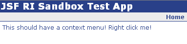

Renders a JavaScript context menu associate with the component's parent. For example:
will render a span with the text "This should have a context menu!":

When the user right clicks on the span, the context menu defined
in via the
If you find the default styling unappealing, the colors, borders, etc are all configurable via CSS. Documentation on how to do that is on the YUI site.